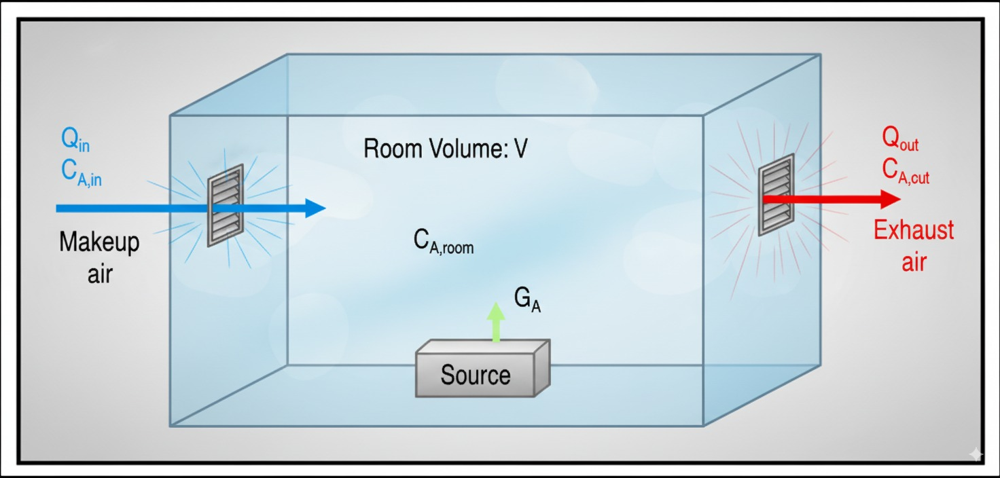

WMR模式暴露濃度與風險評估計算器
選擇計算模式：
週期性運轉時間濃度 (Cyclic Processes)
考慮背壓時間濃度 (Back Pressure)
排放指數遞減時間濃度 (Exponential Decay)
基本參數
房間體積 V (m³)：
通風量 Q (m³/min)：
初始濃度 C₀ (mg/m³)：
進氣濃度 C_in (mg/m³)：
初始排放率 G₀ (mg/min)：
初始溫度 T₀ (°C)：
每分鐘升溫速率 dT/dt (°C/min)：
總模擬時間 t (min)：
週期性參數
運轉時間 (min)：
停止時間 (min)：
背壓參數
蒸發面積 A (m²)：
分子量 MW (g/mol)：
飽和蒸氣壓 P_v (mmHg)：
質量傳遞係數 K_t (m/min)：
指數遞減參數
衰減常數 α (1/min)：
初始質量 M₀ (mg)：
暴露限值設定
TWA 單位：
mg/m³
ppm
STEL 單位：
mg/m³
ppm
IDLH 單位：
mg/m³
ppm
OEL 單位：
mg/m³
ppm
計算
列印報告
